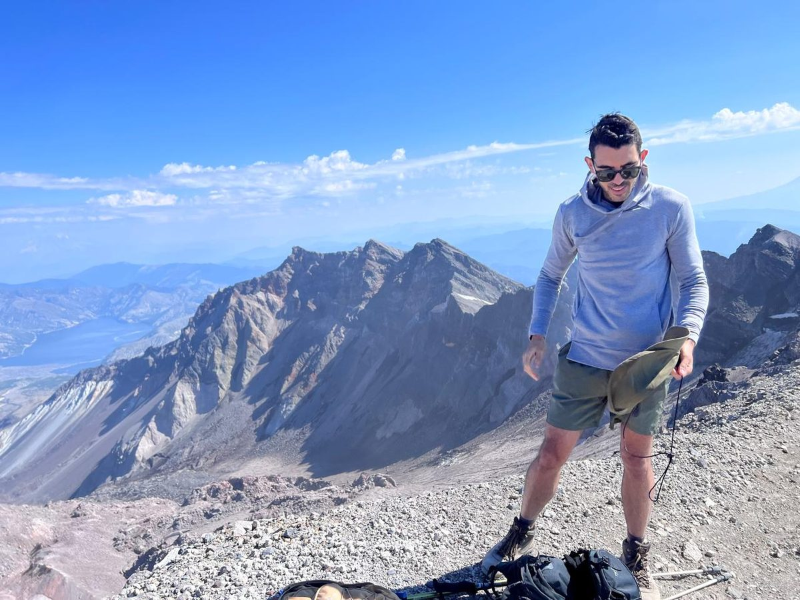
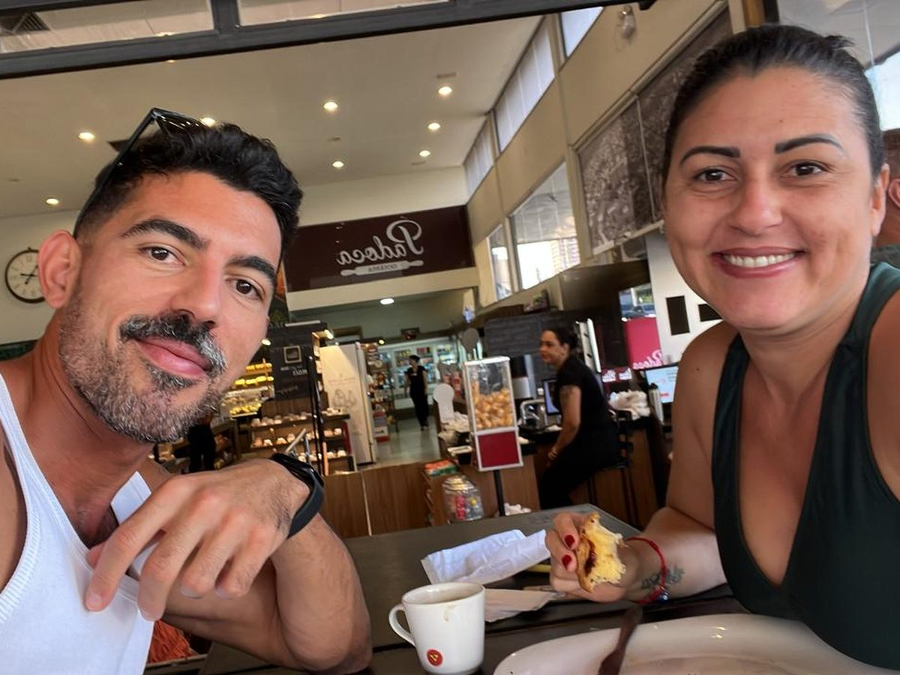
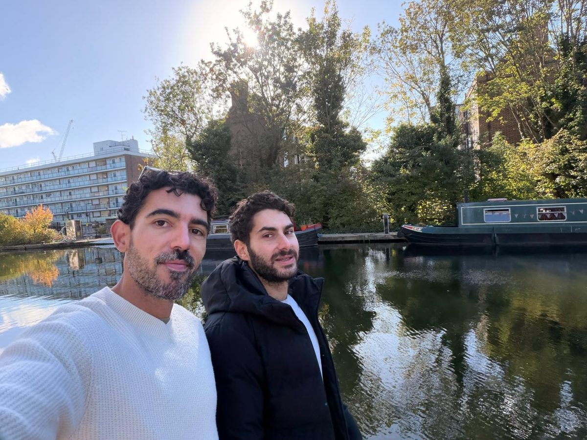
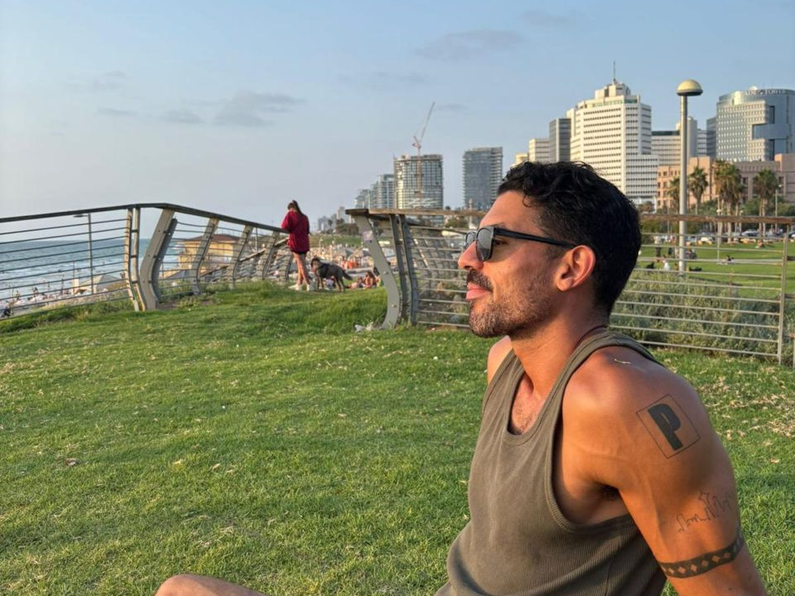

Hi, I'm Marlon
I'm a data scientist in fintech, specializing in time series forecasting. Originally from Brazil, I've lived and worked in Seattle, Brazil and London, and I'm now based in Tel Aviv.
My story
I'm Brazilian, and I moved to the U.S. on a scholarship. That turned into a B.A. in Finance at Seattle University, an M.S. in Quantitative Management at Duke, and years of work in Seattle.
I started in finance operations, reconciling thousands of accounts a day, and I kept building tools to automate the work: first in VBA, then in Python. That's how I found data science. I liked programming, and I was curious about the tools and the creativity involved in solving problems with data.
Since then I've grown from treasury analytics into data science, building forecasting models that help decide how much money needs to be where, every day. Along the way I moved back to Brazil for a year and a half, was transferred to London, and now live in Tel Aviv with my husband.
What I'm good at
Time series forecasting
Most of my experience: from explainable seasonal models to machine learning, tested with honest backtests and translated into business impact.
Explaining complex topics
Helping non-technical stakeholders understand what a model says, how confident it is, and what to do about it.
Visualization
Charts and dashboards that make the answer obvious, from Tableau reports to interactive pages like this one.
Tools
Python (pandas, NumPy, scikit-learn, XGBoost, statsmodels, Prophet), SQL, R, Git and Tableau.
What I'm interested in
Problems where data drives real decisions: forecasting and planning, risk, experimentation, and turning messy operational data into tools people trust. I've done most of this in payments and treasury, and I'm open to bringing it to new industries.
Outside work
I love reading science news, following how the payments industry is changing, and reading science fiction books — my favorite series being The Southern Reach trilogy by Jeff VanderMeer. Away from the screen you'll find me biking, hiking, or exploring a city one food and coffee spot at a time. Tel Aviv is giving me plenty to explore. I speak Portuguese and English, and I'm learning Hebrew.



